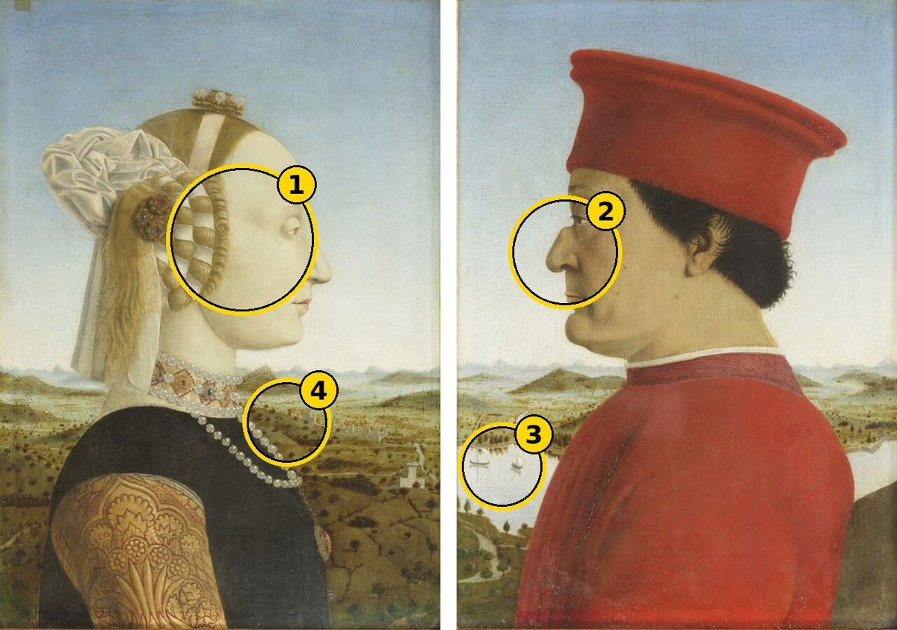

Hidden in the Frame · Uffizi Gallery, Florence
The Duke and Duchess of Urbino
Piero della Francesca · c. 1473–75 · Oil and tempera on panel, diptych · Room 8

The story
Federico da Montefeltro was a mercenary captain, brutal in war and at the same time one of the most cultured princes in Italy. In 1472 his wife Battista died aged only 26, shortly after giving birth to their long-awaited son. Soon after, this double portrait was made. The two look at each other – in profile, like emperors on ancient coins, for eternity.
Details to look for
- Battista is strikingly pale, almost like wax. Piero probably painted her from her death mask. She is no longer quite alive – a memory looking at her husband.
- Federico is only shown from the left: he lost his right eye in a tournament. The notch in his nose is real – he reportedly had the bridge of his nose removed so he could see more with his remaining eye and avoid ambushes. Piero flatters nothing: warts, wrinkles, everything is there.
- Behind both stretches one continuous landscape, with a lake and small boats. It is his territory – and it joins the two panels into one shared world.
- Her pearls and jewels stand for purity and rank. Be sure to look at the backs: there both ride on triumphal carts. The Latin inscription under hers is in the past tense – a quiet hint that she is already dead.
What it says
A monument to love and an image of power at once: the prince shows himself honestly and unflattered, and his late wife looks at him forever.
Open the full guide – zoom, audio guide, German & Japanese →